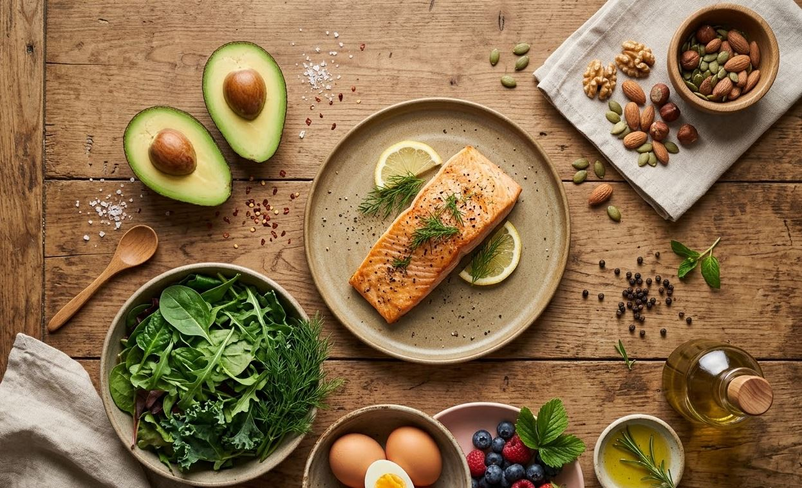
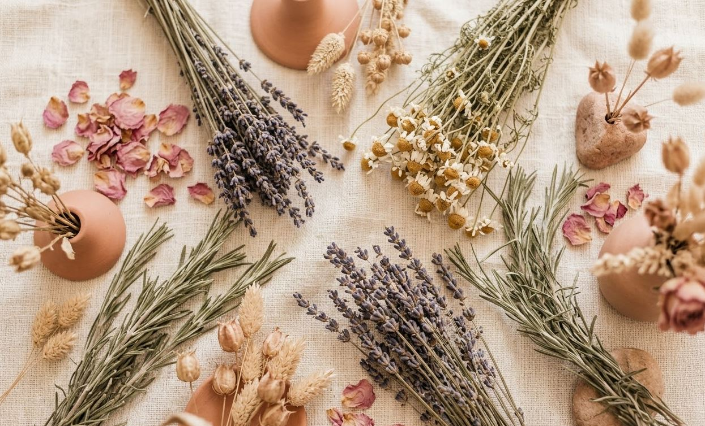

Nutrición · Fertilidad · Metabolismo Hormonal
Descargá la guía gratuita donde te explico qué parámetros realmente importan para tu fertilidad — más allá de lo que te dicen como "normal".
📘 Guía gratuita
Descargar la guía ahoraEs gratuita · Sin spam · Directo a tu email
Quiero trabajar mi caso con Fértil 1:1
Quizás te pasa esto
Si sentís que estás haciendo todo bien y aún así no pasa nada, probablemente no necesitás más información. Necesitás un plan claro para tu caso.
Fértil es ese proceso.
Conocé Fértil 1:1
Soy Julieta Lupardo, licenciada en nutrición especializada en fertilidad y metabolismo hormonal. Trabajo con mujeres que están buscando embarazo desde un enfoque diferente: entender qué está pasando realmente en tu cuerpo antes de buscar soluciones genéricas.
Porque muchas veces el problema no es la falta de información — es que nadie está mirando lo que realmente importa.
Fértil 1:1
Fértil es mi programa de acompañamiento 1:1 donde trabajamos tu caso, tus análisis y tu alimentación con un plan claro y seguimiento real durante 8 semanas.
No es una consulta aislada. Es un proceso pensado para generar cambios concretos en tu fertilidad.
Si sentís que estás probando cosas sueltas y no sabés por dónde empezar, esto es para vos.
Quiero empezar con FértilLa fertilidad no depende solo de tus estudios de rutina. Tu metabolismo, tus niveles de inflamación, tu equilibrio hormonal… todo eso impacta directamente en tu capacidad de concebir.
La guía gratuita
Qué estudios pedir antes de buscar embarazo — más allá de los de rutina
Cómo interpretar resultados que te dijeron que eran "normales"
Qué nutrientes impactan directamente en tu fertilidad
Los errores más comunes que pueden estar frenándote sin que lo sepas
Empezá a entender qué puede estar pasando en tu cuerpo.
¿Querés que trabajemos esto en tu caso, con seguimiento real?
Conocé Fértil 1:1 →En medios
Descargá la guía gratuita y da el primer paso.
Quiero la guía gratuitaSi sentís que todavía no es el momento para un proceso completo, podés empezar con una consulta individual.